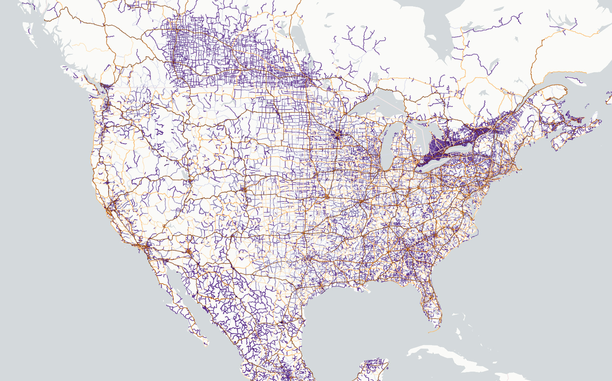

PathLayer¶

Screenshot from North America roads example
lonboard.PathLayer ¶
The PathLayer renders lists of coordinate points as extruded polylines with
mitering.
Example:
import geopandas as gpd
from lonboard import Map, PathLayer
# A GeoDataFrame with LineString geometries
gdf = gpd.GeoDataFrame()
layer = PathLayer.from_geopandas(
gdf,
get_color=[255, 0, 0],
)
map_ = Map(layers=[layer])
auto_highlight
class-attribute
instance-attribute
¶
auto_highlight = traitlets.Bool(False).tag(sync=True)
When true, the current object pointed to by the mouse pointer (when hovered over) is
highlighted with highlightColor.
Requires pickable to be True.
- Type:
bool - Default:
False
billboard
class-attribute
instance-attribute
¶
billboard = traitlets.Bool(allow_none=True).tag(sync=True)
If True, extrude the path in screen space (width always faces the camera).
If False, the width always faces up.
- Type:
bool, optional - Default:
False
cap_rounded
class-attribute
instance-attribute
¶
cap_rounded = traitlets.Bool(allow_none=True).tag(sync=True)
Type of caps. If True, draw round caps. Otherwise draw square caps.
- Type:
bool, optional - Default:
False
get_color
class-attribute
instance-attribute
¶
get_color = ColorAccessor()
The color of each path in the format of [r, g, b, [a]]. Each channel is a number
between 0-255 and a is 255 if not supplied.
- Type: ColorAccessor, optional
- If a single
listortupleis provided, it is used as the color for all paths. - If a numpy or pyarrow array is provided, each value in the array will be used as the color for the path at the same row index.
- If a single
- Default:
[0, 0, 0, 255].
get_width
class-attribute
instance-attribute
¶
get_width = FloatAccessor()
The width of each path, in units specified by width_units (default 'meters').
- Type: FloatAccessor, optional
- If a number is provided, it is used as the width for all paths.
- If an array is provided, each value in the array will be used as the width for the path at the same row index.
- Default:
1.
joint_rounded
class-attribute
instance-attribute
¶
joint_rounded = traitlets.Bool(allow_none=True).tag(sync=True)
Type of joint. If True, draw round joints. Otherwise draw miter joints.
- Type:
bool, optional - Default:
False
miter_limit
class-attribute
instance-attribute
¶
miter_limit = traitlets.Int(allow_none=True).tag(sync=True)
The maximum extent of a joint in ratio to the stroke width.
Only works if jointRounded is False.
- Type:
float, optional - Default:
4
opacity
class-attribute
instance-attribute
¶
opacity = traitlets.Float(1, min=0, max=1).tag(sync=True)
The opacity of the layer.
- Type:
float. Must range between 0 and 1. - Default:
1
pickable
class-attribute
instance-attribute
¶
pickable = traitlets.Bool(True).tag(sync=True)
Whether the layer responds to mouse pointer picking events.
This must be set to True for tooltips and other interactive elements to be
available. This can also be used to only allow picking on specific layers within a
map instance.
Note that picking has some performance overhead in rendering. To get the absolute
best rendering performance with large data (at the cost of removing interactivity),
set this to False.
- Type:
bool - Default:
True
visible
class-attribute
instance-attribute
¶
visible = traitlets.Bool(True).tag(sync=True)
Whether the layer is visible.
Under most circumstances, using the visible attribute to control the visibility of
layers is recommended over removing/adding the layer from the Map.layers list.
In particular, toggling the visible attribute will persist the layer on the
JavaScript side, while removing/adding the layer from the Map.layers list will
re-download and re-render from scratch.
- Type:
bool - Default:
True
width_max_pixels
class-attribute
instance-attribute
¶
width_max_pixels = traitlets.Float(allow_none=True, min=0).tag(sync=True)
The maximum path width in pixels. This prop can be used to prevent the path from getting too thick when zoomed in.
- Type:
float, optional - Default:
None
width_min_pixels
class-attribute
instance-attribute
¶
width_min_pixels = traitlets.Float(allow_none=True, min=0).tag(sync=True)
The minimum path width in pixels. This prop can be used to prevent the path from getting too thin when zoomed out.
- Type:
float, optional - Default:
0
width_scale
class-attribute
instance-attribute
¶
width_scale = traitlets.Float(allow_none=True, min=0).tag(sync=True)
The path width multiplier that multiplied to all paths.
- Type:
float, optional - Default:
1
width_units
class-attribute
instance-attribute
¶
width_units = traitlets.Unicode(allow_none=True).tag(sync=True)
The units of the line width, one of 'meters', 'common', and 'pixels'. See
unit
system.
- Type:
str, optional - Default:
'meters'
from_geopandas
classmethod
¶
from_geopandas(gdf: gpd.GeoDataFrame, **kwargs) -> Self
Construct a Layer from a geopandas GeoDataFrame.
The GeoDataFrame will be reprojected to EPSG:4326 if it is not already in that coordinate system.
Parameters:
-
gdf(GeoDataFrame)The GeoDataFrame to set on the layer.
Returns:
-
SelfA Layer with the initialized data.